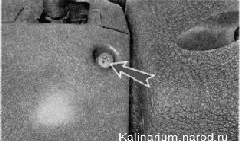
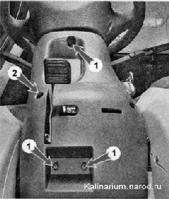
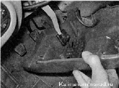
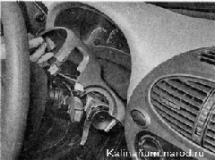

Декоративные накладки рулевой колонки - снятие и установкаСнятие 1. Подготавливаем автомобиль к выполнению работы. 2. С двух сторон рулевой колонки крестовой отверткой отворачиваем два самореза... 
...и два винта крепления накладок друг к другу 2. Той же отверткой отворачиваем и три самореза 1 крепления нижней накладки к рулевой колонке. 3. Перемещаем рычаг фиксации рулевой колонки вниз до упора и опускаем рулевую колонку. 4. Снимаем нижнюю накладку, выводя рычаг через отверстие. 5. Снимаем резиновое кольцо с выключателя (замка) зажигания. 6. Снимаем верхнюю накладку рулевой колонки. Установка Устанавливаем накладки в обратной последовательности. |